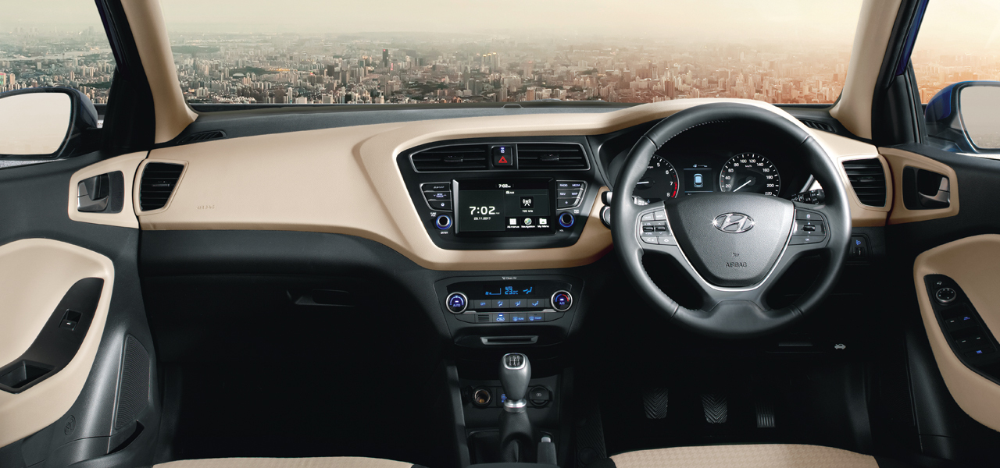
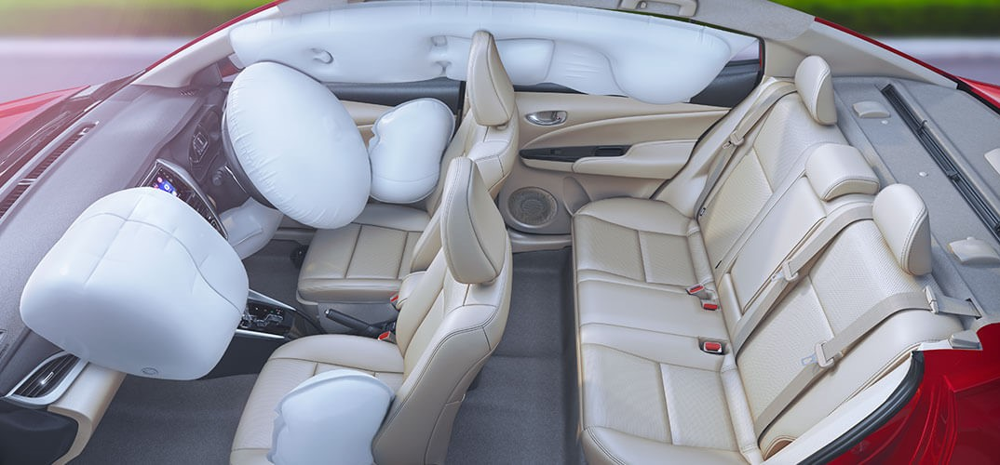
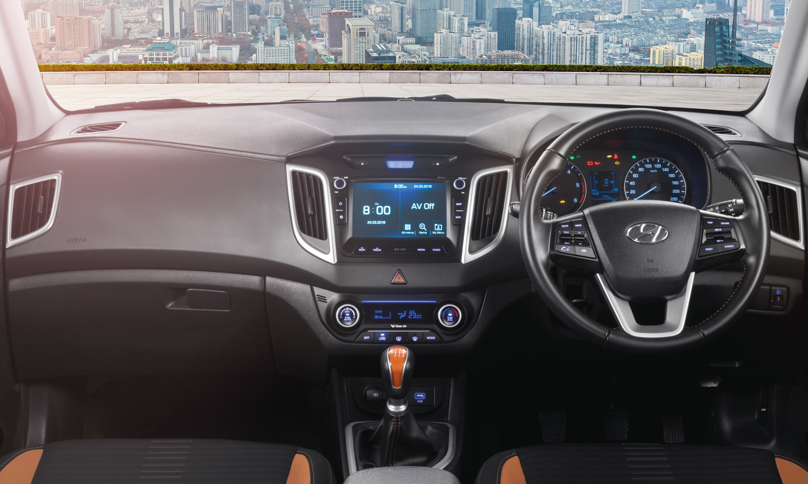

HYUNDAI i20 ELITE
With many first-in-segment features and the fluidic 2.0 design philosophy, this car is a built to make everyday an adventure.
REVIEW
The i20 Elite is differentiated from its 'regular' hatch sibling by means of a lot of grey plastic cladding, skid-plate that looks a bit too try-hard, and odd fitments here-and-there. I especially don't like the treatment of the auxiliary lamps - the plastic housing looks particularly low-rent. Other than such stuff, the car isn't any different in design from the regular i20 hatch, but in some functional features it stands a bit tall. The i20 Elite gets daytime running LEDs and even cornering lights, which is a cool thing. At the rear, too, it's the usual try-hard affair, and though Hyundai has managed to make the i20 Elite look slightly virile, the problem is, the base design (of the donor car, i20) is elegant and graceful, and forcing it to look rugged doesn't work that beautifully. It's like asking Reese Witherspoon to play Black Widow - it somehow doesn't go that well.

The Hyundai i20 Elite is based on the car maker’s best selling car in the country today, the Elite i20. So the Elite shares the same proportions, the same styling fare.Elite sports a new, more rugged looking front bumper, some body cladding and roof rails, not to mention a pseudo bull bar, skid plates and huge fog lamps, it looks way more purposeful than the regular i20 hatchback. Not just that, Hyundai has upped the practicality co-efficient on the i20 Elite as well by raising its ground clearance to 190mm. And lest we forget, we like the new design for the 16 inch wheels and that new fuel filler cap too!The i20 Elite gets daytime running LEDs and even cornering lights, which is a cool thing. At the rear, too, it's the usual try-hard affair, and though Hyundai has managed to make the i20 Elite look slightly virile, the problem is, the base design (of the donor car, i20) is elegant and graceful, and forcing it to look rugged doesn't work that beautifully.

There’s no change to the engine or gearbox lineup for the i20 Elite. The petrol is still the 83PS, 1.2-litre kappa, four cylinder VTVT engine mated to a 5-speed gearbox and the diesel continues to displace 1.4-litre and develop 90PS of max power. The diesel engine is mated to a 6-speed manual gearbox. The only difference, besides the i20 Elite being slightly heavier, is that the Elite runs a shorter final drive compared to the Elite i20. The idea, says Hyundai, was to make the Elite feel peppier to give it that sporty feel younger buyers crave for. Hyundai says, it has recorded an 11 per cent improvement in acceleration compared to the regular i20 in the diesel and around 6 per cent in the petrol.
The diesel does continue to feel pretty potent…once you get past that turbo lag. It’s also a reasonably free revving and refined engine for a diesel in its class. And the gear shift quality leaves little to be desired.

The design elements continue unchanged on the i20 Elite when compared to the Elite i20. So, one gets the same dash, the same instrumentation and similar quality as the Polo challenger. And that’s not a bad thing because the Elite i20 is already top of the class when it comes to interiors; be it the feeling of space, the numerous stowage spaces, seating comfort or even space for that matter, the Elite i20 leads the pack.Additionally, the i20 Elite gets cornering lights and aluminium pedals. Yes, we know the latter doesn't really add to the driving experience in any way, but we like it for it looks cool.
What’s not so cool, is the use of blue on the dashboard, the doors and the seats. It just takes away from that plush feeling the Elite i20 is known for. Now this ‘blue’ is exclusive to the silver car. If you do however choose the brown or the red, all you get is matte orange outlines and inserts for the aircon vents, stereo, seats and the gear-lever.

Braking was an issue with the Elite i20 with the brakes feeling a little woody and a tad short on bite. Unfortunately, there’s no change to the brakes and the i20 Elite too is nowhere near the best in this department. And like the Elite i20, it uses discs at the front and drums at the rear, unlike an all disc setup seen on the previous generation i20.
Handling wise, the i20 Elite won't get you all charged up. It is good in a straight line - stable, predictable and more than capable of handling undulations no matter what the speed. But when it comes to cornering, the mute steering is a big dampener. Having said that, the grip levels are fine and even though the i20 Elite does roll about, it still remains predictive. It isn't exciting but it's safe alright.
Handling wise, the i20 Elite won't get you all charged up. It is good in a straight line - stable, predictable and more than capable of handling undulations no matter what the speed. But when it comes to cornering, the mute steering is a big dampener. Having said that, the grip levels are fine and even though the i20 Elite does roll about, it still remains predictive. It isn't exciting but it's safe alright.

The equipment list is equally exhaustive. One gets everything from the top of the line Elite i20 on this, the i20 Elite SX. So there’s keyless entry and start, a multifunctional steering wheel, Bluetooth connectivity, a stereo with 1 GB internal memory, digital climate control and a reversing camera. It also gets automatic lights, ABS and air bags. The i20 Elite offers ample leg space and storage space
for your comfort and convenience.Smart Key adds to the convenience and
push button enables start and stop of
the car with just a touch.Sunglass Holder located at front map
lamp, a safe place to keep your shades.Rear camera parking guidelines are steering angle sensitive & curve as per the steering position to precisely guide the vehicle during complex or congested parking space.The i20 Elite is well equipped with four high frequency Tweeters for a better surround sound experience

Hyundai expects to sell close to 3,000 units of the i20 Elite a month. And to do that – given this segment is still in its infancy – the Korean car maker must price the car aggressively. A premium of Rs 50,000-60,000 over the Elite i20 is reasonable in our opinion. The Elite, like the Elite, will remain easy on the pocket to run too; the diesel does come with an ARAI rated fuel efficiency of 21.19kmpl after all. The petrol at over 17kmpl isn't bad either.